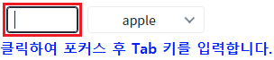
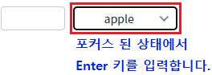
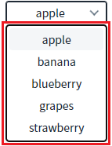
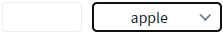
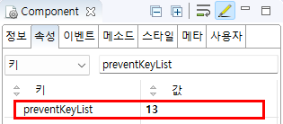

SelectBox의 'preventKeyList' 속성을 사용하여, SelectBox에 포커스된 상태에서 키가 입력되었을 때, 속성에 설정한 키 코드를 무시하도록 설정된 예제입니다.
이 설정을 사용하여 컴포넌트에서 키 입력 시 제공하는 기본 기능(목록 확장, 항목 선택 등)을 사용하지 않을 수 있습니다. 이 기능은 보통 키를 이용한 기능을 직접 구현할 때 사용됩니다.
(기본) 키 기능 사용
엔터(Enter)키 기능 사용 안함
Input 컴포넌트에서 Tab 키로 Selectbox에 포커스를 이동한 뒤 Enter 키를 입력하여 동작을 비교합니다.
예제 영역 '(기본) 키 기능 사용'에서 테스트합니다.1
STEP 1: Selectbox로 포커스를 이동합니다.
InputBox를 클릭한 뒤 Tab 키를 입력하여 Selectbox로 포커스 합니다.
Image 1.브라우저(Chrome) 실행 예시

2
STEP 2: Selectbox가 포커스된 상태에서 Enter키를 입력합니다.
Image 2.브라우저(Chrome) 실행 예시

3
STEP 3: 실행 결과를 확인합니다.
목록이 표시(확장)됩니다.
Image 3.브라우저(Chrome) 실행 예시

예제 영역 '엔터(Enter)키 기능 사용 안함'에서 테스트합니다.1
STEP 1: Selectbox로 포커스를 이동합니다.
InputBox를 클릭한 뒤 Tab 키를 입력하여 Selectbox로 포커스 합니다.
Image 4.브라우저(Chrome) 실행 예시
2
STEP 2: Selectbox가 포커스된 상태에서 Enter키를 입력합니다.
Image 5.브라우저(Chrome) 실행 예시
3
STEP 3: 실행 결과를 확인합니다.
목록이 표시(확장)되지 않습니다.
Image 6.브라우저(Chrome) 실행 예시

1
속성을 설정합니다.
[필수] preventKeyList="키 코드"
웹스퀘어 엔진 내부에서 처리하는 키 동작을 막는 기능. 막고자 하는 keycode 값들을 구분자 , 를 사용하여 나열한다. 모든 키를 차단하려면 all을 입력한다.
ex) preventKeyList="13" //Enter 키 기능 사용 안함
Image 7.웹스퀘어 스튜디오의 Component View - 속성 설정 예시

Example 1.Source
<!-- selectbox의 소스 본문 예시 --> <xf:select1 preventKeyList="13" id="sbx_exam2"> <!-- 중략 --> </xf:select1>
preventKeyList